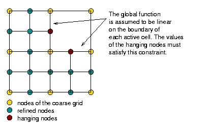

You get hanging nodes after some refinements. Hanging nodes are those that are situated on the boundary of a larger active cell. The global function is assumed to be linear on the boundary of each active cell, therefore the value of the hanging node must be adjusted accordingly. Newly created nodes that are not situated on boundaries of larger active cells are not subject to this constraint because there is no reason to assume that the global function is linear on the boundary of a parent cell. Hanging nodes and the constraints they are subject to need to be taken into account when generating your matrix structure. This is further discussed in the chapters on matrix structure and condensing the hanging nodes.
|  |
In order to get constraints for your hanging nodes you have to assume
some function on the boundaries of your cells, as mentioned above.
Take a linear function on the cell boundary between vertices 1 and 2
with function values x1 and x2. If you get
a hanging node on this boundary during refinement it will be situated
in the middle and therefore its value - the value of the function on
the boundary at this point - will be x3 = 1/2 (x1+x2).
The value x3 is therefore not a free degree of freedom,
but it is bound by this constraining equation and we will have to take
this into account.
Assume a system Au=f with u being the solution
vector with all the degrees of freedom of the finite elements, in particular
base functions associated with hanging nodes, which are not true degrees of
freedom of the system of equations.
The constraint for hanging nodes now is that we must be able to calculate
their value from the values of the surrounding nodes by interpolation.
Let y be a vector with entries corresponding to true degrees of
freedom only. We must be able to write u as
u=Cy
where C, the constraint matrix is a square matrix containing the
interpolation.
Now we have to solve
Au = fwith the constraint, that there is aysatisfyingu = CyFrom this we getCTACy = CTfor, taking~A := CTAC, b := CTf ~A y = b.
It is not possible to generate ~A directly, but
we can generate A and condense it to ~A
using the constraints, solve the system and obtain u by
u=Cy.
| Next Chapter: Matrix Structure | Back to this chapter's index | Back to the tutorial index |
Last modified: $Date$